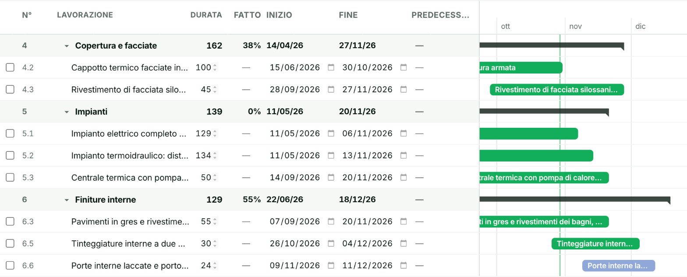
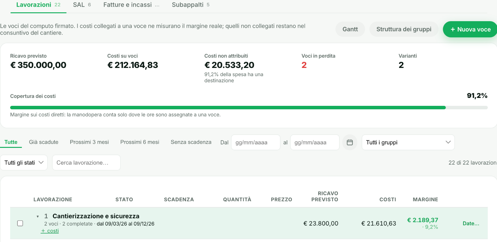
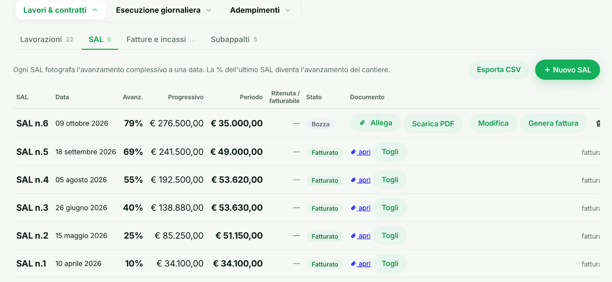
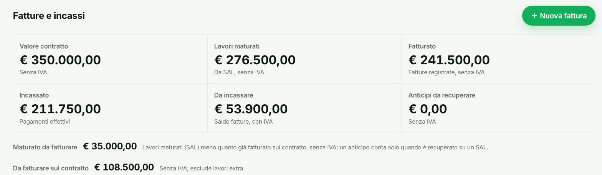
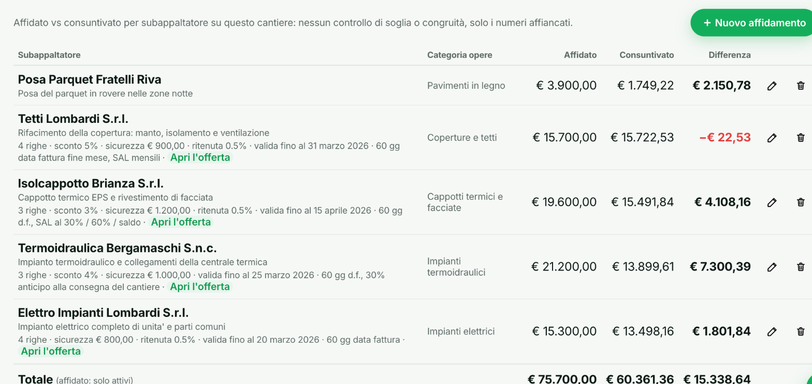

- Home
- Funzionalità
- Gestione cantieri
Ogni cantiere ha la sua scheda. Tutto in ordine, sempre.
Rapportini giornalieri, ore per operaio, materiali, foto e documenti: tutto archiviato automaticamente per cantiere. Le lavorazioni del preventivo firmato, il Gantt e i subappalti restano collegati allo stesso cantiere.
- Rapportini via WhatsApp in 30 secondi
- Giornale lavori generato automaticamente
- Lavorazioni del preventivo firmato, con margine per singola voce
- Gantt per pianificare e vedere i tempi di ogni lavorazione
- Foto e documenti archiviati per cantiere
- Stato avanzamento lavori (SAL) che aggiorni tu
- Affidato vs consuntivo per ogni subappaltatore sul cantiere

Le informazioni di cantiere restano nella testa di qualcuno
Rapportini scritti a mano o mai scritti
Il capocantiere non ha tempo per compilare moduli, così tante informazioni si perdono o restano solo a voce.
Foto e documenti sparsi ovunque
Foto sul telefono di uno, DDT nel furgone di un altro: ricostruire la storia di un cantiere richiede ore.
Nessuno sa lo stato reale senza chiamare
Per sapere a che punto è un cantiere, l'unico modo è telefonare al capocantiere e sperare risponda.
Come funziona nel dettaglio
Il capocantiere aggiorna dal campo
Rapportino, ore, materiali: un messaggio su WhatsApp basta per aggiornare la scheda del cantiere, dal cantiere stesso.
Aedify organizza tutto in automatico
Ogni informazione finisce nella sezione giusta: ore all'operaio corretto, materiali al cantiere corretto, foto e documenti archiviati insieme.
Tu vedi lo stato reale in ogni momento
Apri la scheda cantiere e trovi rapportini, documenti e l'ultimo SAL che hai inserito, in ordine, senza chiedere a nessuno.
Non è una lista di rapportini. È il quadro completo di ogni commessa.
Ogni cantiere ha tre aree: il valore economico legato al preventivo firmato, quello che succede ogni giorno sul campo, e gli adempimenti da tenere sotto controllo. Sono collegate tra loro, non tre strumenti separati. Apri una voce per vedere come appare davvero dentro Aedify.
Lavori & contratti
Tutto quello che lega il cantiere al preventivo firmato e al suo valore economico.
Lavorazioni
Le voci del preventivo firmato diventano le lavorazioni del cantiere: ogni voce ha la sua quantità, il suo prezzo e il suo margine, collegato ai costi reali registrati su quella voce. Vedi subito ricavo previsto, costi coperti e voci in perdita.

SAL (Stati Avanzamento Lavori)
Ogni SAL fotografa l'avanzamento a una data, con il progressivo fatturato e il periodo corrente. L'ultimo SAL diventa automaticamente la percentuale di avanzamento del cantiere, e genera la fattura da emettere al cliente con un clic.

Fatture e incassi
Valore del contratto, lavori maturati in base ai SAL, fatturato, incassato e da incassare: il quadro economico del cantiere sempre aggiornato, fattura per fattura, con il residuo da incassare per ognuna.

Subappalti
Per ogni subappaltatore sul cantiere vedi l'affidato e il consuntivo a confronto, con la differenza sempre visibile: chi sta sforando il budget si vede a colpo d'occhio, senza fogli a parte.

Gantt
Pianifichi le lavorazioni nel tempo, con dipendenze tra voci, percorso critico, traguardi e sospensioni. Vedi subito cosa è in corso, cosa è in ritardo e cosa deve ancora partire, esportabile in PDF.
Esecuzione giornaliera
Quello che succede ogni giorno sul cantiere, registrato dal capocantiere via WhatsApp.
Rapportini
Un vocale o una foto dal cantiere: Aedify li trascrive e li trasforma in ore, costi e materiali registrati, senza moduli da compilare.
Costi per categoria
Materiali, noleggi, manodopera, subappaltatori e spese anticipate, ognuno nella sua categoria: il totale si confronta subito con il preventivato.
Personale
Ore per operaio, raggruppate anche per squadra di lavoro: sai subito chi ha lavorato dove, quando e quanto è costato.
Avanzamento lavori
Foto di avanzamento ricevute su WhatsApp, in ordine cronologico: la documentazione visiva del cantiere si costruisce da sola.
Materiali
Consumi di materiale per cantiere, collegati all'inventario condiviso tra tutte le commesse.
Diario di cantiere
Ogni giornata di lavoro si registra da sola, pronta da consultare o esportare in caso di controllo.
Adempimenti
Scadenze e documenti specifici di questo cantiere, non solo quelli generali dell'impresa.
Scadenze di cantiere
DURC dei subappaltatori, aggiornamento POS, verifica ponteggio PiMUS, polizza CAR: ogni scadenza legata a questo cantiere specifico, con preavviso automatico.
Documenti
DDT, bolle e foto del cantiere, archiviati automaticamente e sempre consultabili dalla scheda, divisi per tipo e data.
Numeri veri, non stime
I tuoi cantieri, in un'unica vista
| Cantiere | Stato | Avanzamento | Ore registrate | Rapportini | Margine |
|---|---|---|---|---|---|
| Attico Brera | Attivo | 62 % | 847 ore | 34 | 58,2% |
| Villa Sole | Attivo | 58 % | 1.240 ore | 51 | 41,7% |
| Capannone SMC | Attenzione | 31 % | 320 ore | 18 | 12,4% |
Vuoi vedere Gestione cantieri in azione?
In 15 minuti ti mostriamo Aedify sul tuo caso concreto. Gratis, senza impegno.
- Gratis, senza impegno
- Solo 15 minuti
- Sul tuo caso concreto